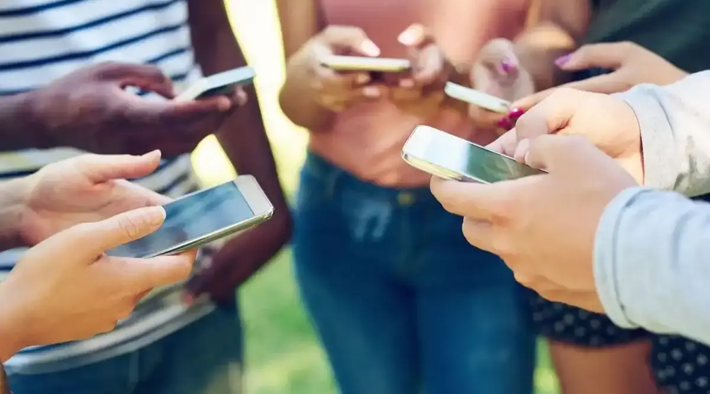

A COMMITTED GENERATION
Over the last few years, our world has undergone many transformations, for the better and sometimes the worse. We have endured economic, societal, health and climate crises.
« Z » like « Zoomer »
I am part of the Z generation, the people born between 1997 and 2010. It’s a generation that has this reputation of "hyper-connected" often in a pejorative way. But this can have good sides.
Indeed, we are confronted every day with hundreds of information, news, hashtags, petitions, calls to mobilize for this or that cause. All this makes us want to act because we became very aware of the problems of today's world.
Youth activism
Many young people consider themselves activists, whether it be for ecology, feminism, anti-racism, etc. We all have ideas that are important to us, more or less. And to express them, we use all the means at our disposal.
In the last few years, especially since the health crisis, activism has gradually migrated to social networks. Of course, it is still present on the ground with different actions, marches, collages, that kind of thing.

But this digitalization of struggles has made the process of engagement more
accessible, for the better.
At the end of the day, the most important thing is the impact, the result of our commitment, no matter
what means we use
for activism.
Is politics for old people?
Some may think that young people are disinterested in politics in general, but I disagree. I think that most young people just don't understand what it means, because in reality everything is political.
Around me, in life and on social networks, I see a lot of young people who are willing to do anything for a world, a future that looks like them. And they wouldn't be politically committed? Actually, they are, just not in the traditional way.
Moreover, when young people speak out, the previous generations simply won’t listen. Our voice is far too often neglected.
The hope must go on
Personally, I desire a more just world, inclusive for all minorities. Along with a more transparent political sphere, with truly collective decisions.
The situation has already progressed well, and despite discouraging events we
should keep hoping.
We must continue to act collectively and to speak out in order to move towards a fairer world.